http://www.fwbuilder.org
| Author: vadim@fwbuilder.org http://www.fwbuilder.org |
This article continues the series of articles on Fireall Builder, a graphical firewall configuration and management tool that supports many Open Source firewall platforms as well as Cisco IOS access lists and Cisco ASA (PIX). Firewall Builder was introduced on this site earlier with articles Getting Started With Firewall Builder,
More information on Firewall Builder, pre-built binary packages and source code, documentation and Firewall Builder Cookbook can be found on the project web site at www.fwbuilder.org. Watch Project Blog for announcements and articles on all aspects of using Firewall Builder.
This article demonstrates how you can import existing iptables or Cisco router configuration into Firewall Builder.
There are two ways to activate the feature: Main menu "File/Import Policy" or "Tools/Discovery Druid" and then choose option "Import configuration of a firewall or a router". Only import of iptables and Cisco IOS access lists is possible in the current version.
iptables config that the program can import is in the format of iptables-save. Script "iptables-save" is part of the standard iptables install and should be present on all Linux distribution. Usually this script is installed in /sbin/ . When you run this script, it dumps current iptables configuration to stdout. It reads iptables rules directly form the kernel rather than from some file, so what it dumps is what is really working right now. To import this into fwbuilder run the script to save configuration to a file
iptables-save > iptables_config.conf
Then launch fwbuilder, activate "Import Policy" function and use "Browse" button in the dialog to find file iptables_config.conf. You also need to choose "iptables" in the drop-down menu "Platform".
If you do not choose iptables in the "Platform", the program will try to interpret the file using different parser and will fail. The program does not make any assumptions about the file name or extension and can not predict automatically what platform is the configuration being imported is for.
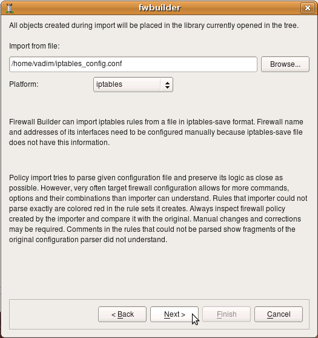The following example demonstrates import of iptables policy generated by Firestarter, another popular iptables configuration management program.
After the platform is selected and file name entered, click "Next" to start the process.
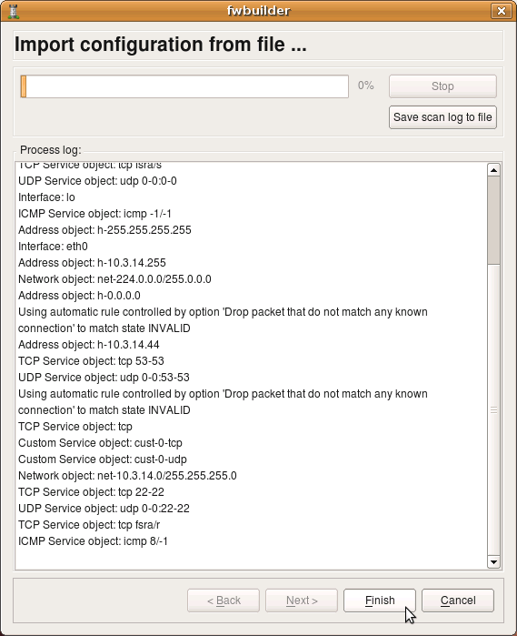The program tries to interpret configuration file rule-by-rule and recreates its equivalent in fwbuilder. The progress window displays errors, if any, as well as some diagnostics that shows network and service objects created in the process. Note that user-defined iptables chains found in the configuration file will be re-created in fwbuilder as policy rule sets. The screenshot shows rulesets "LSI", "LSO", "OUTBOUND" being created. There were more but they did not fit in the output window. Address objects "h-10.3.14.10", "h-10.3.14.255" and few others have been created as well. Service objects "tcp fsra/s", "udp 0-0:0-0", "icmp -1/-1" and few others have also been created.
Note that the new firewall object created in the process has generic name "New Firewall". This is because iptables configuration file used for import does not have information about firewall machine name. It also does not have information about its interfaces, their names and addresses. The program can infer their names when it encounters "-i <interface>" or "-o <interface>" clause in the iptables configuration lines. It can not reliably detect their addresses though. You need to rename firewall object and add ip addresses to interfaces after the import manually.
Note also that only ipv4 part of the iptables configuration was imported. Currently, import of ipv6 iptables configuration is not supported.
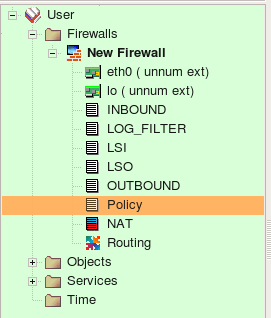Screenshot above demonstrates rule sets that the program created from the configuration it imported. Rule sets "INBOUND", "LOG_FILTER", "LSI", "LSO", "OUTBOUND", "Policy" are all of the type "Policy" and contain filtering rules. There were no NAT rules in the original configuration so the rule set "NAT" is created but is empty. Names of all policy rule sets match names of the iptables chains in the original configuration.
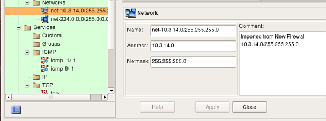 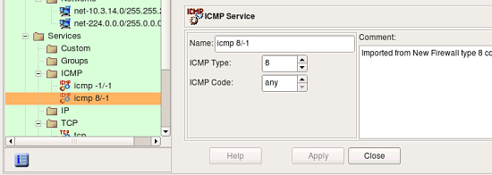 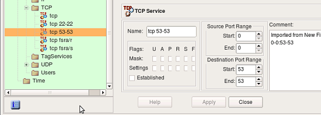screenshots above demonstrate address and service objects created by the program. It writes a comment in each object to remind that it was created automatically on import. Names of these objects are chosen automatically, you can rename objects to give them more meaningful names. Some of the objects created during import have the same properties as existing service and address objects from the Standard objects library. Currently the program does not cross-match them and just creates new objects, however in the future it may use standard objects instead.
Some rules in the original iptables config used "--tcp-flags" parameter to match only certain combinations of tcp flags. Here is an example:
-A INPUT -s 10.3.14.10 -p tcp -m tcp ! --tcp-flags FIN,SYN,RST,ACK SYN -j ACCEPT
In order to be able to reproduce this rule, fwbuilder created special TCP service object with given combination of tcp mask and flags:
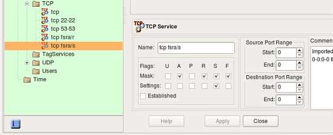The follwoing screenshot demonstrates rules created in the main Policy rule set. These are the top iptables rules, some of them branch off to the other Policy rule sets. Some of the rules in the original policy did not match state (did not have clause "-m state --state NEW" or similar), these rules were created with the flag "stateless" turned on. In fwbuilder, this makes policy compiler generate iptables commands without "-m state --state NEW" clause which matches the original. These rules are marked with an icon that represents non-default rule options in the column "Options".
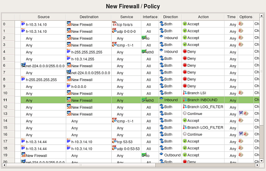Lets inspect one group of rules little closer. The original iptables file contained the following commands:
-A INPUT -i eth0 -j INBOUND
-A INBOUND -p tcp -m state --state RELATED,ESTABLISHED -j ACCEPT
-A INBOUND -p udp -m state --state RELATED,ESTABLISHED -j ACCEPT
-A INBOUND -s 10.3.14.0/255.255.255.0 -j ACCEPT
-A INBOUND -s 10.3.14.0/255.255.255.0 -p tcp -m tcp --dport 22 -j ACCEPT
-A INBOUND -s 10.3.14.0/255.255.255.0 -p udp -m udp --dport 22 -j ACCEPT
-A INBOUND -j LSI
The first rule is in chain INPUT and was recreated as rule #11 in the Policy rule set (rule colored green). Since it was in INPUT, the destination object in the rule #11 is the firewall itself. The "-i eth0" clause translated into interface object "eth0" in the "Interface" rule element and direction "Inbound". The action of the rule #11 is "Branch", pointing to the rule set "INBOUND". This is direct recreation of the original rule in itpables config.
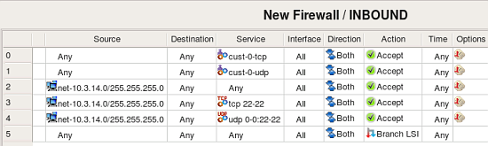This screenshot demonstrates rules created in the rule set "INBOUND". Rule #0 matches CustomService object "custo-0-tcp" that was created to match combination of protocol "tcp" and state "RELATED,ESTABLISHED". This object is shown in the following screenshot:
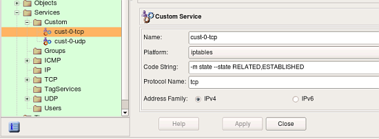Fwbuilder automatically adds a rule on top of generated iptables script to match packets in states "ESTABLISHED, RELATED". With that rule, it is not necessary to have a rule like #0 in INBOUND, but since original script had it, fwbuilder reproduced it.
rule #1 in INBOUND matches protocol udp and state "ESTABLISHED,RELATED". Other rules in INBOUND reproduce original rules from the chain INBOUND and match packets coming from the local net heading for the firewall machine. It is easy to see that the original policy was redundant: rules #2-4 match the same source and destination addresses but different services, but rule #2 matches any service which means rules #3 and 4 will never match any packets. Fwbuilder will detect this problem automatically if you try to compile this policy (this is called "Rule shadowing").
All packets not matched by any rule in INBOUND will match last rule in this rule set which branches to the rule set LSI. Rule set LSI logs various packets and drops them:
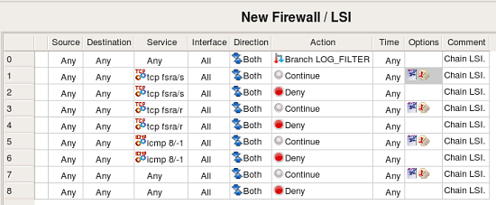The first thing about rules in this rule set that catches the eye is why do we have all these rules with action "Continue".
When a rule is marked as "logging" in fwbuilder, it gets an icon in the column "Options" that represents log, this icon appears either by itself or next to the icon that represents non-default rule options. However, iptables does not allow for an action "Accept" or "Deny" to be used in combination with logging, in iptables logging is separate target just like "ACCEPT" or "DROP". Because of that, fwbuilder splits a rule that has action "Accept" or "Deny" or any other with logging turned on. One such rule becomes two or more iptables rules in the generated script. Unfortunately when iptables script is imported back, the program can not merge such rules and logging rules appear in the rule set as separate rules with logging icon in the "Options" column and action "Continue". This is a valid configuration in fwbuilder, it just means that the rule generates log record but does not make any decision whether the packet should be accepted or denied and the firewall should continue its inspection.
Here is the fragment of the original iptables rules in the chain LSI:
-A LSI -p tcp -m tcp --tcp-flags FIN,SYN,RST,ACK SYN \
-m limit --limit 1/sec -j LOG --log-prefix "Inbound " --log-level 6
-A LSI -p tcp -m tcp --tcp-flags FIN,SYN,RST,ACK SYN -j DROP
These rules become rules #1 and 2 in rule set LSI in fwbuilder. The first rule, the one that does logging, becomes a separate rule because this is how it is done in iptables. If this policy was created in fwbuilder, rules #1 and 2 would be just one rule in the GUI. Double-clicking in the column "Options" in rule #1 opens dialog where you can inspect and edit its options. Tab "Limit" of this dialog controls parameters iptables "limit" module which was used in the original rule. Screenshot below demonstrates how policy importer recognized these parameters and reproduced them in the rule options:

iptables policy importer in fwbuilder has its limitations. Main limitation is that it can only parse certain set of iptables modules and targets. There are too many modules and associated targets out there and supporting all of them is next to impossible. However, it supports the core functionality and most popular modules. Even though importer tries to be as close to the original configuration as possible, you should always review rules and objects it creates and edit resultant rules. Most of the time rules can be simplified, such as with logging rules as was explained above. Often you can merge multiple rules by putting several objects in source or destination or service. Using object and service groups is another good way to simplify rules.
Importing IOS access lists configuration is more straightforward because branching is not possible there. To import configuration, first you need to save it using "show run" command. IOS has literary hundreds of different commands and configuration clauses, but fwbuilder can only parse those related to the access lists configuration. Other commands will be ignored. There is no need to edit configuration prior to importing it into fwbuilder (except for the "banner" command, see below). Saved IOS configuration has information about router name and its interfaces, this information will be used to recreate objects in fwbuilder. Parser will not only create interface objects with proper names, it will also attach address objects to them to describe their ip addresses.
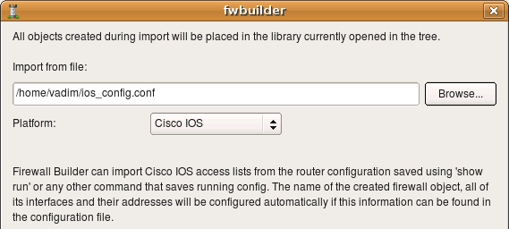Just like with iptables, we start with main menu "File/Import Policy" and enter file name in the dialog. The "Platform" drop-down list should be set to "Cisco IOS". Click "Next" to start import process.
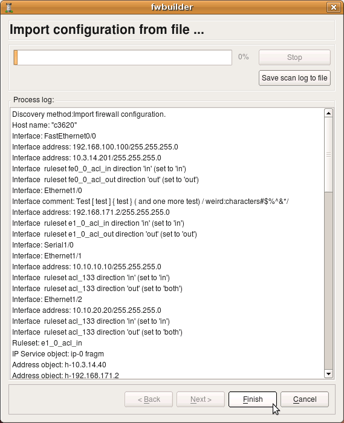The program recognized router name "c3620" and its interfaces, created interface objects with their ip addresses and then created some address and service objects. My test router config contains the following lines (this is just a fragment, there are more interfaces and more ACLs):
interface FastEthernet0/0
ip address 192.168.100.100 255.255.255.0 secondary
ip address 10.3.14.201 255.255.255.0
ip access-group fe0_0_acl_in in
ip access-group fe0_0_acl_out out
no ip mroute-cache
duplex auto
speed auto
!
interface Ethernet1/0
description Test [test] {test} (and one more test) /weird:characters#$%^&*/
ip address 192.168.171.2 255.255.255.0
ip access-group e1_0_acl_in in
ip access-group e1_0_acl_out out
no ip mroute-cache
ip ospf cost 65000
half-duplex
crypto map real
!################################################################
ip access-list extended e1_0_acl_in
deny ip any any fragments
permit tcp host 10.3.14.40 host 192.168.171.2 eq 22 log
permit tcp host 10.3.14.40 host 10.3.14.201 eq 22 log
permit ip any 10.3.14.0 0.0.0.255 log
deny ip any any log
!################################################################
ip access-list extended e1_0_acl_out
permit ip 10.3.14.0 0.0.0.255 any log
deny ip any any log
Parser recognizes comments and skips them, but text from interface descriptions goes into comments in the Interface objects.
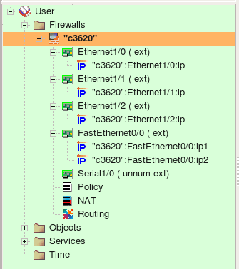Firewall Builder recognizes both named and regular extended access lists. Each separate access list is recreated in fwbuilder in the same main Policy rule set. The program recognizes "ip access-group" commands and puts corresponding interface object in the "Interface" rule element of the rules it creates.

The original configuration used the same access list "133" with two interfaces:
interface Ethernet1/1
ip address 10.10.10.10 255.255.255.0
no ip mroute-cache
!
! Note - the same access list applied both in and out
ip access-group 133 in
ip access-group 133 out
no shutdown
half-duplex
!
interface Ethernet1/2
ip address 10.10.20.20 255.255.255.0
no ip mroute-cache
!
! Note - the same access list applied both in and out
! the same list is applied to eth 1/1 and eth 1/2
ip access-group 133 in
ip access-group 133 out
no shutdown
half-duplex
!
The program recognizes this and creates object group "intf-acl_133" with these two interfaces as members:
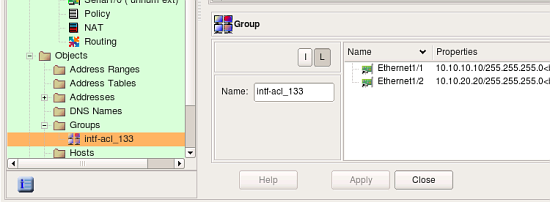It then uses this group in the "Interface" element of rules #0, 1 and 2 to reproduce rules from the access list "133".
Interface configuration commands visible in the config snippets above, such as "half-duplex", "duplex auto", "speed auto", various protocol configuration commands and other commands supported by IOS inside "interface" block are ignored.
One IOS configuration construct that fwbuilder can not import is "banner" command. This command is special in that it allows the user to set arbitrary terminator character and then it allows any text up to this character. This creates a problem for fwbuilder parser because the terminator character can be arbitrary. You need to edit and remove banner from the saved configuration file before importing it.